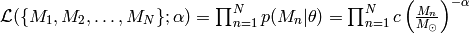
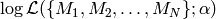

Metropolis-Hastings algorithm¶
Salpeter likelihood function¶
We just saw that Monte-Carlo methods can draw samples from any probability distribution. In the former case, that probability distribution was the Salpeter mass function, from which we sampled stellar masses.
Now, our goal is to learn the probability distribution of  , given some data (the posterior probability). In fact, we are happy to only infer the likelihood function here. Unfortunately, this now requires some math.
, given some data (the posterior probability). In fact, we are happy to only infer the likelihood function here. Unfortunately, this now requires some math.
We assume that we are given  i.i.d. samples of stellar masses (with negligible errors on the measurements). In that case, the likelihood of the problem is
i.i.d. samples of stellar masses (with negligible errors on the measurements). In that case, the likelihood of the problem is

Furthermore, we assume that we are given an observation interval of stellar masses. (Infering that interval for observational data is a complicated astronomical problem.) Then, we can evaluate the normalisation constant,
This enables us to solve for  , if we want to.
, if we want to.
Instead of , once usually considers , which is numerically more stable and usually also simplifies the math,
There are two important things to note carefully about this log-likelihood function:
- It is not a least-squares problem.
- The data only enters via , which is completely independent of the fit parameter and can be computed once at beginning. Therefore, handling huge datasets such as a Gaia catalogue is no problem at all!
Problems of Monte-Carlo sampling¶
If we were to plot  as a function of , we would realise that it has a single extremely sharp peak.
This is a huge problem for Monte-Carlo sampling, because the likelihood is essentially zero everywhere, except at this single sharp peak. The chance that our proposal distribution hits a value at this peak tends towards zero. Consequently, we cannot estimate by drawing Monte-Carlo samples from .
In general, there is also an even more severe problem: Monte-Carlo methods such as the one we discussed before only work in one dimension. If we have more than one fit parameter, i.e., if we need to draw samples from PDFs over high-dimensional parameter spaces, these Monte-Carlo methods quickly become computationally infeasible. (See Sect. 29.3 in MacKay’s ITILA for a runtime analysis.)
Solution: Markov-chain Monte-Carlo (MCMC) sampling¶
The solution to both problems is MCMC. We provide a first value - an initial guess - and then look for better values in a Monte-Carlo fashion.
There are numerous MCMC algorithms. For the moment, we only consider the Metropolis-Hastings algorithm, which is the simplest type of MCMC.
We continue the previous code that drew samples from the Salpeter SMF and start implementation with the definition of the log-likelihood function and the toy data:
def evaluateLogLikelihood(alpha, D, N, M_min, M_max):
# Compute normalisation constant.
c = (1.0 - alpha)/(math.pow(M_max, 1.0-alpha) - math.pow(M_min, 1.0-alpha))
# return log likelihood.
return N*math.log(c) - alpha*D
# Generate toy data.
N = 1000000 # Draw 1 Million stellar masses.
alpha = 2.35
M_min = 1.0
M_max = 100.0
Masses = sampleFromSalpeter(N, alpha, M_min, M_max)
LogM = numpy.log(numpy.array(Masses))
D = numpy.mean(LogM)*N
Now follows the actual Metropolis-Hastings algorithm:
# initial guess for alpha.
guess = 3.0
# Prepare storing MCMC chain.
A = [guess]
# define stepsize of MCMC.
stepsize = 0.005
accepted = 0.0
# Metropolis-Hastings with 10,000 iterations.
for n in range(10000):
old_alpha = A[len(A)-1]
old_loglik = evaluateLogLikelihood(old_alpha, D, N, M_min, M_max)
# Suggest new candidate from Gaussian proposal distribution.
new_alpha = random.gauss(old_alpha, stepsize)
new_loglik = evaluateLogLikelihood(new_alpha, D, N, M_min, M_max)
# Accept new candidate in Monte-Carlo fashing.
if (new_loglik > old_loglik):
A.append(new_alpha)
accepted = accepted + 1.0
else:
u = random.uniform(0.0,1.0)
if (u < math.exp(new_loglik - old_loglik)):
A.append(new_alpha)
accepted = accepted + 1.0
else:
A.append(old_alpha)
print "Acceptance rate = "+str(accepted/10000.0)
Finally, we discard the burn-in phase, thin out the Markov chain in order to reduce autocorrelations, and plot the result:
# Discard first half of MCMC chain and thin out the rest.
Clean = []
for n in range(5000,10000):
if (n % 10 == 0):
Clean.append(A[n])
plt.figure(1)
plt.hist(Clean, 20, histtype='step', lw=3)
plt.xticks([2.346,2.348,2.35,2.352,2.354],[2.346,2.348,2.35,2.352,2.354])
plt.xlim(2.345,2.355)
plt.xlabel(r'$\alpha$', fontsize=24)
plt.ylabel(r'$\cal L($Data$;\alpha)$', fontsize=24)
plt.savefig('example-MCMC-results.png')
plt.show()